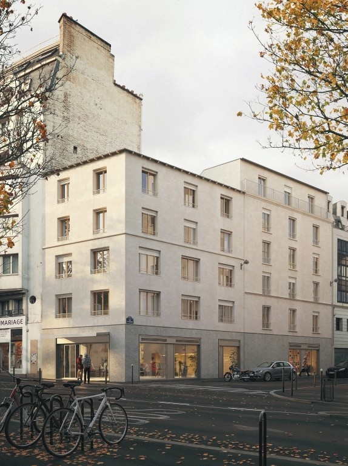

PRO · Rehabilitation
Belhomme
- Location
- Paris
- Year
- 2025–2026
- Studio
- Studio BELEM
- Type
- Residential Rehabilitation
- Surface
- 260 m²
- Register
- 04 of 12

A corner residential building in Paris, its particular condition at the intersection of two streets creating a geometry that generates both problems and opportunities: obtuse room angles, a chamfered corner that reads as a landmark on the block, and party wall situations on two sides that require careful structural dialogue with adjacent buildings.
The rehabilitation addresses the envelope, the common areas, and the redistribution of the upper-floor apartments. The chamfered corner is treated as the compositional centre of the facade renovation, reinforcing its urban role. The project was conducted within the ABF regulatory framework, requiring close coordination with the heritage authority throughout the design and permitting stages.
Drawings and images

Render, Proposed Courtyard Facade
Fig. 2
Proposed courtyard elevation · Lime-render facade, natural wood joinery, inox mesh guardrails · Soft volumetric modelling of the corner condition preserved within the rehabilitated envelope · Studio BELEM · 2026
Full size: Fig. 2, Render, Proposed Courtyard Facade
Existing Facade Survey and Selective Demolition Plans
Fig. 3
Top: existing facade elevations, complete survey of all eight facades including mouldings, gutters, chimney stacks and joinery catalogue · Base survey established before selective demolition · Bottom: demolition plans, levels S1 to N05, strict codification: existing retained (black), elements to demolish (red hatched), floor and roof slabs to demolish (solid red)
Full size: Fig. 3, Existing Facade Survey and Selective Demolition Plans
Regulatory Compliance, PLU Sections
Fig. 4
PLU regulatory compliance · Top left: section, Rue Belhomme, verification of height envelope, footprint limit and prospect on courtyard · Top right: facade elevation, Rue Belhomme, programme distribution, NGF altimetry and opening composition · Bottom left: section, Boulevard Rochechouart, corner condition and total admissible height reading · Bottom right: facade elevation, Boulevard Rochechouart, existing, retained and new superposition at the chamfered corner · Blue: existing retained · Red: new elements and envelope limits
Full size: Fig. 4, Regulatory Compliance, PLU Sections